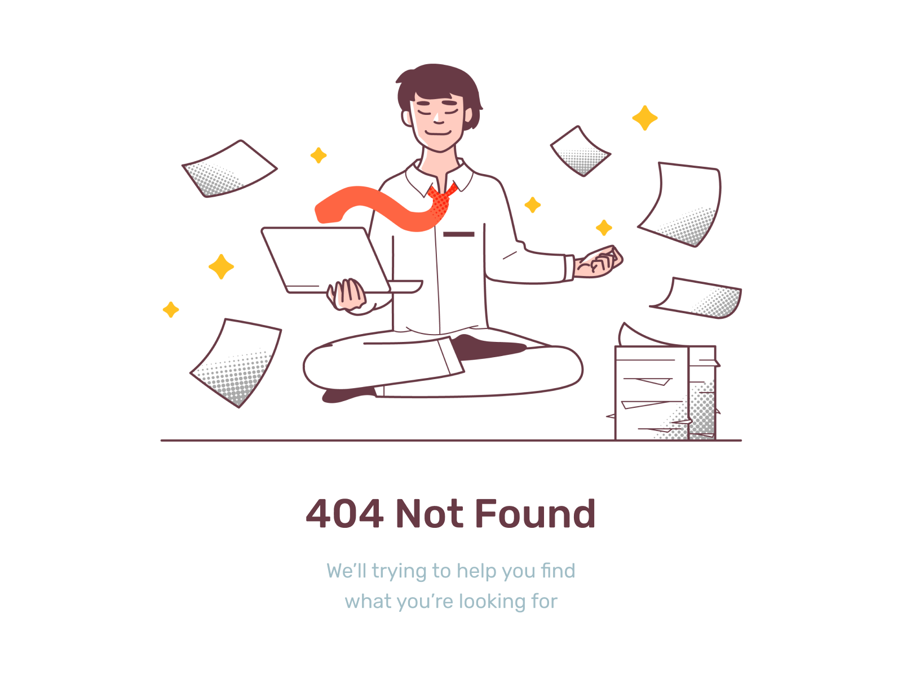

<div class="row">
  <div class="col-12">
    <div class="row">
      <div *ngIf="branches" class="col-3 d-flex align-self-center">
        <mat-form-field appearance="fill">
          <mat-label>Branches</mat-label>
          <mat-select [(value)]="userSelectedBranch" (selectionChange)="onOptionChange($event.value)">
            <mat-option *ngFor="let branch of branches" [value]="branch">
              {{branch}}
            </mat-option>
          </mat-select>
        </mat-form-field>
      </div>
    </div>
    <div class="chart-section">
      <div class="row">
        <div
          [ngClass]="{'col-6 p-4 border-end': true, 'd-flex justify-content-center': smellDensityOccuranceChartOptions.series === null}">
          <highcharts-chart *ngIf="smellDensityOccuranceChartOptions.series" [Highcharts]="Highcharts"
            [options]="smellDensityOccuranceChartOptions"
            style="width: 100%; height: 400px; display: block;"></highcharts-chart>
          
        </div>
        <div
          [ngClass]="{'col-6 p-4 border-end': true, 'd-flex justify-content-center': packedBubbleSmells.series === null}">
          <highcharts-chart *ngIf="packedBubbleSmells.series" [Highcharts]="Highcharts" [options]="packedBubbleSmells"
            style="width: 100%; height: 400px; display: block;"></highcharts-chart>
          
        </div>
      </div>
      <div class="row">
        <div
          [ngClass]="{'col-12 p-4 border-end': true, 'd-flex justify-content-center': densityTimeline.series === null}">
          <highcharts-chart *ngIf="densityTimeline.series" [Highcharts]="Highcharts" [options]="densityTimeline"
            style="width: 100%; height: 400px; display: block;"></highcharts-chart>
          
        </div>
      </div>
    </div>
  </div>
</div>